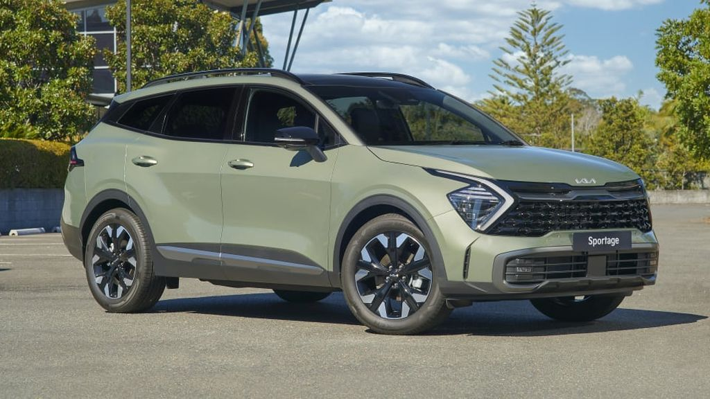

KIA Sportage (2022)

The Kia Sportage (Korean: 기아 스포티지) is a series of automobiles manufactured by the South Korean manufacturer Kia since 1993 through five generations. Initially a compact SUV built on a body-on-frame chassis, the second-generation Sportage transitioned to a car-based platform which placed it into the compact crossover S UV class, and has been developed alongside the Hyundai Tucson. Since the fifth-generation model launched in 2021, Kia developed the Sportage in two sizes with different wheelbase lengths for different markets.
Manufacturer: KIA- Production: 1993 - present
- Assembly: Japan
- Designer: Peter Schreyer
- Colors Available: Grey, Black, White, Blue
- Price: R 23,000 (Payment over 24 months available)